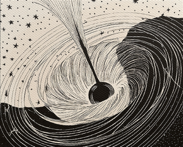

IT‑asiantuntija työtehtävät Valtorilla. IT‑tukea valtion viranomaisille liittyen tietokoneisiin, puhelimiin ja niiden tarvikkeisiin sekä käyttäjätunnuksiin ja ohjelmistoihin.
Service desk työtehtävät. IT‑tukea tietokoneisiin ja puhelimiin sekä niiden tarvikkeisiin, käyttäjätunnuksiin ja ohjelmistoihin.
Service desk työtehtävät Keski‑Suomen Hyvinvointialueella. IT‑tukea tietokoneisiin ja puhelimiin sekä niiden tarvikkeisiin, käyttäjätunnuksiin ja ohjelmistoihin.
Keräilytrukilla tuotteiden keräystä sekä tilausten pakkausta, sekä muita tehtäviä.
Tuotteiden hyllytystä sekä asiakaspalvelua.